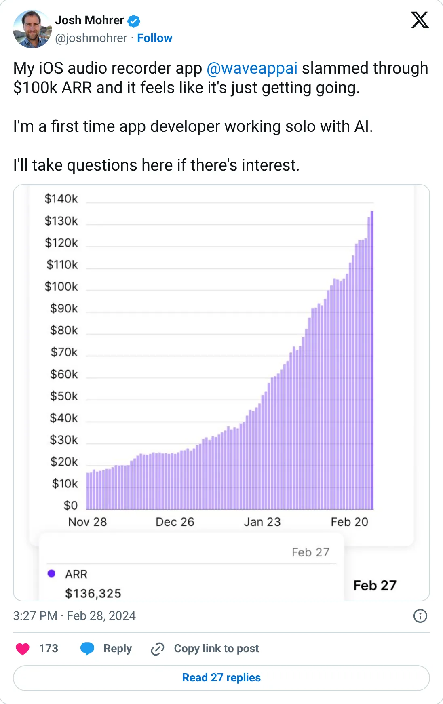
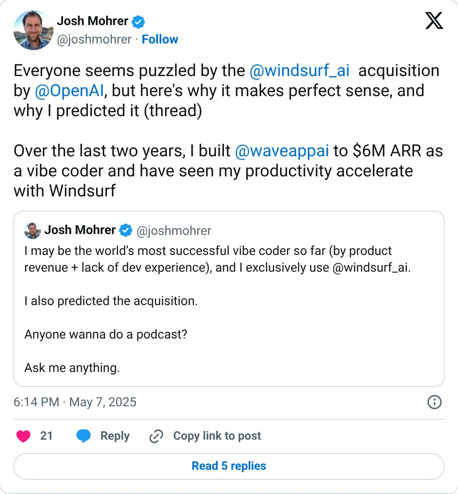

Don't build this
Wave AI
Meeting notes, a solo $6M claim, then seventeen months of silence.
$6M ARR (May 2025)
Should you build this
Wave is a meeting recorder and summarizer, built by one person, from $100k ARR to a claimed $6M in about fifteen months, posted in May 2025. This report has nothing after that. Otter, Granola, and the model companies already sit on the job. A peak followed by silence is not a map of the market. Don't start a notes app from this number.
Cited from the captured posts, shown below: the earliest captured post (Feb 28, 2024) is the source for “Passed $100K ARR, solo with AI”; the latest milestone (May 7, 2025) is the source for “$6M ARR as a vibe coder”.
Posts this is based on

Passed $100K ARR, solo with AI
Open on X

$6M ARR as a vibe coder
Open on X
What the product is
AI note-taker app that records and transcribes meetings, calls and lectures into summaries. Built by a first-time solo coder using AI.